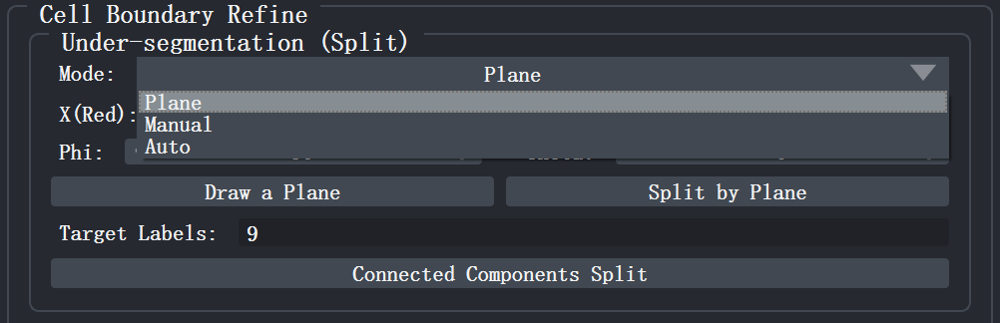
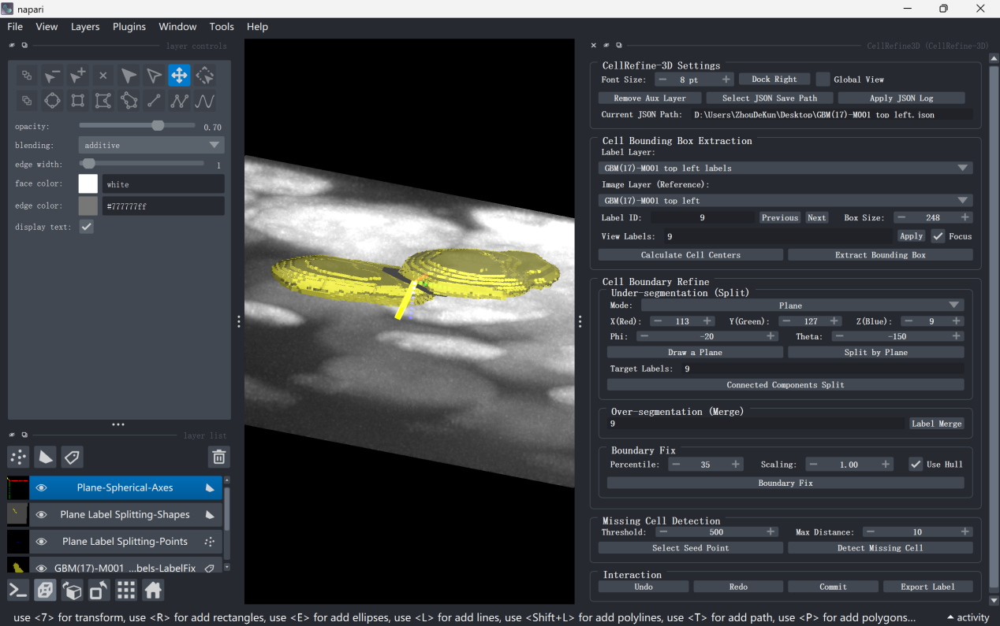
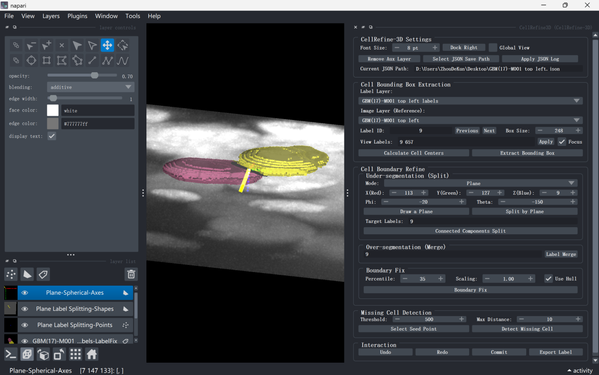
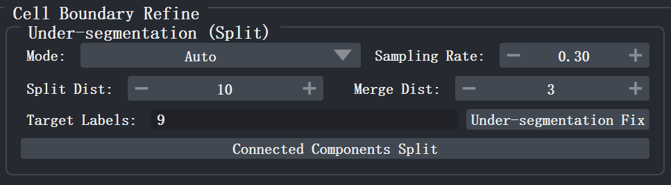
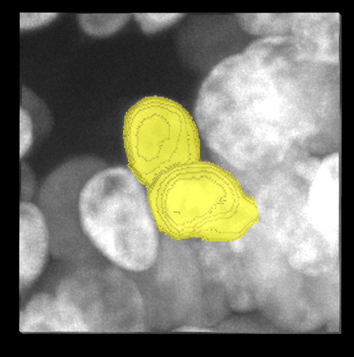
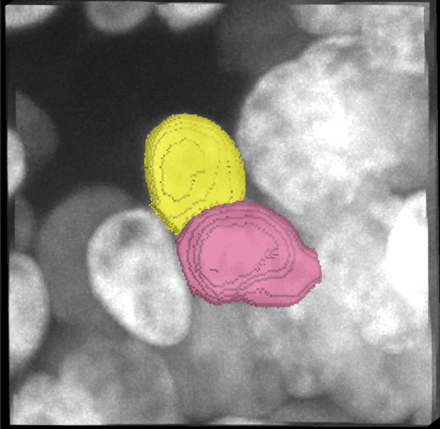
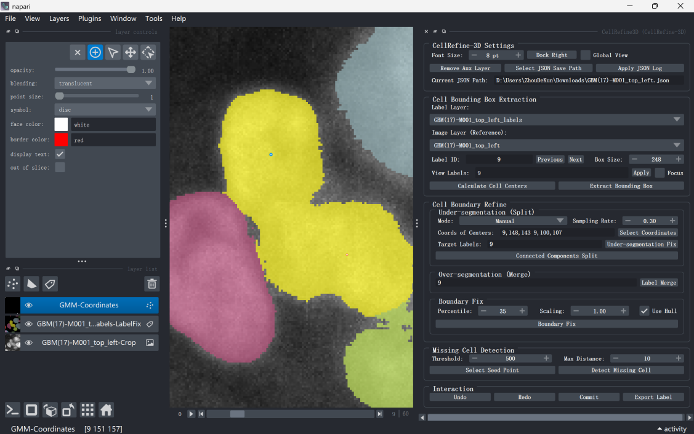
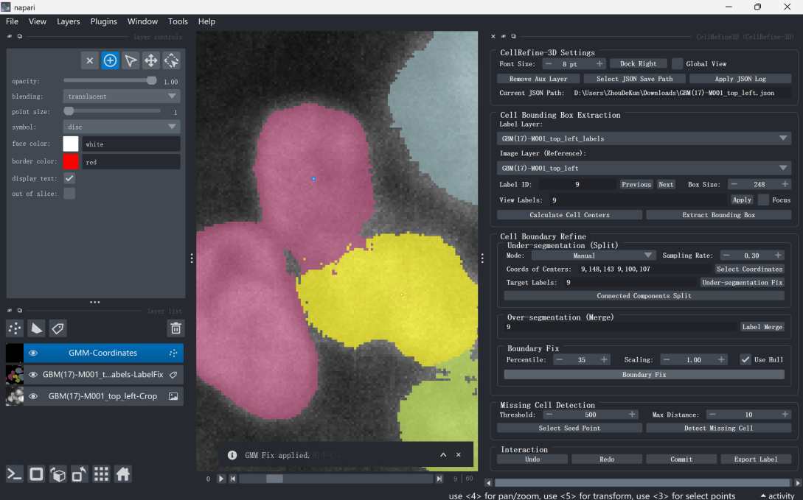

Under-segmentation Split¶
Under-segmentation refers to multiple independent cells being incorrectly labeled with the same label. NuPatch3D provides three under-segmentation repair modes:
- Plane: Manual splitting based on a segmentation plane;
- Auto: Automatic splitting based on GMM;
- Manual: GMM splitting with manually specified cell centers.
The three modes share the same set of Target Labels, and can be combined with Connected Components Split for post-processing.
In the Cell Boundary Refine region of the plugin panel, select the splitting mode via the Mode drop-down box in the Under-segmentation (Split) area.

After label repair, you must click the Commit button in the Interaction region, or press the shortcut Shift+S, to write the modified results back to the global Labels layer. Otherwise, the repaired labels will only be saved in the current local editing region and will not be synchronized to the global label layer. For detailed instructions on committing and saving results, please refer to Saving Results.
4.1 Plane Mode (Plane Splitting)¶
Applicable when two cells can be separated by a single plane.
4.1.1 Set Target Labels¶
Enter the label IDs to be split in the Target Labels input box. Multiple labels are separated by spaces, for example:
114 514
4.1.2 Create Splitting Plane¶
Click Draw a Plane.
If no plane reference point has been created yet, NuPatch3D will create the Plane Label Splitting-Points layer (blue points) and automatically enter point selection mode. At this point, switch to the 2D view and click once near the target cell to determine the plane center.
After completion, NuPatch3D will automatically create:
- Plane Label Splitting-Shapes: The splitting plane and normal vector;
- Plane-Spherical-Axes: 3D reference coordinate axes.
At the same time, the X, Y, Z and Phi, Theta parameters will be automatically synchronized to the current plane position and orientation.
The above auxiliary layers are only used for interactive positioning and can be cleaned up with the shortcut Shift+C.
4.1.3 Adjust the Splitting Plane¶
Adjust the plane position and orientation via the following parameters:
- X, Y, Z: Plane center coordinates;
- Phi, Theta: Plane normal vector direction.
During adjustment, the 3D view will update the plane position in real time until it is located at the boundary between the target cells.
4.1.4 Execute Splitting¶
Click Split by Plane. NuPatch3D will divide the voxels on both sides of the plane into different labels. After completion, you can check the splitting results in the 2D or 3D view.


4.2 Auto Mode (GMM Auto Splitting)¶
Auto mode automatically identifies and separates under-segmented cells based on the Gaussian Mixture Model (GMM). It is suitable for scenarios where cell boundaries are relatively clear and no manual segmentation position is required.
4.2.1 Set Algorithm Parameters¶
- Sampling Rate: Voxel sampling ratio (default: 0.3), used to control the number of samples participating in GMM training. The smaller the value, the faster the running speed; the larger the value, the more stable the result usually is.
- Split Dist: Splitting threshold (default: 10). If the cell diameter is greater than this value, splitting is performed; otherwise, it is not.
- Merge Dist: Merging threshold (default: 3). If the distance between two cells is less than this value, they are merged; otherwise, they are not.
4.2.2 Set Target Labels¶
Enter the label IDs to be automatically split in the Target Labels input box. Multiple labels are separated by spaces.
If left blank, automatic splitting will be performed on all non-zero labels within the current local editing region (Bounding Box).

4.2.3 Execute Auto Splitting¶
Click Under-segmentation Fix. NuPatch3D will automatically complete cluster analysis, cell center optimization, and label reassignment, and assign unique label IDs to newly generated cells to ensure no conflict with existing labels. After splitting, cell centers will be automatically updated.


4.3 Manual Mode (Manually Specify Centers)¶
Manual mode is suitable for cases where automatic splitting results are not ideal. Users can manually specify cell center positions to guide NuPatch3D in completing the split.
4.3.1 Set Cell Centers¶
Cell centers can be specified in the following two ways:
Method 1: Manual Coordinate Input
Enter the cell center coordinates in the Coords of Centers input box in the format:
Z,Y,X
Multiple center coordinates are separated by spaces, for example:
10,20,30 15,25,35
Method 2: Interactive Point Selection
Click Select Coordinates. NuPatch3D will create the GMM-Coordinates layer and automatically enter point selection mode. At this point, switch to the 2D view and click sequentially at the center positions of the target cells to add marker points.
After point selection is completed, NuPatch3D will automatically:
- Synchronize the coordinates to Coords of Centers;
- Identify the corresponding labels and fill them into Target Labels.
GMM-Coordinates is only used for auxiliary point selection and does not participate in the final splitting calculation. After splitting is completed, this auxiliary layer can be deleted via the shortcut Shift+C.

4.3.2 Execute Splitting¶
Click Under-segmentation Fix. NuPatch3D will use the user-specified center coordinates as initial cell centers to perform splitting on Target Labels, and automatically update the label results.

4.4 Connected Components Relabeling¶
If the same label contains multiple disconnected regions, click Connected Components Split to process it.
NuPatch3D will perform 3D connected component analysis on each label in Target Labels, retain the original label for the largest connected component, and automatically assign new label IDs to the remaining connected components, thereby resolving under-segmentation.